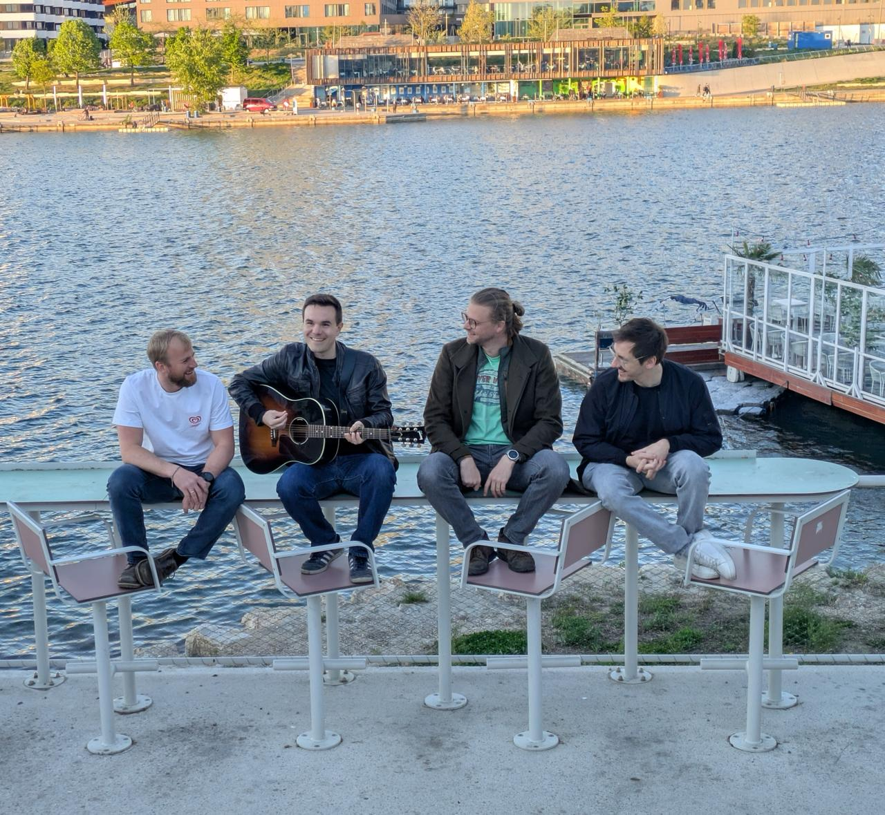

Live
07.06 – Club Lucia
Wien

Bunski ist eine Indierockband aus Wien. Vier Freunde – Gesang, zwei Gitarren, Bass und Drums – mit einem Sound, der zwischen treibendem Gitarrenrock und verspielter Leichtigkeit pendelt. Melodien, die im Kopf bleiben, Riffs, die unter die Haut gehen und Bum Tschak zum Mitwippen.

Wien
Social Media